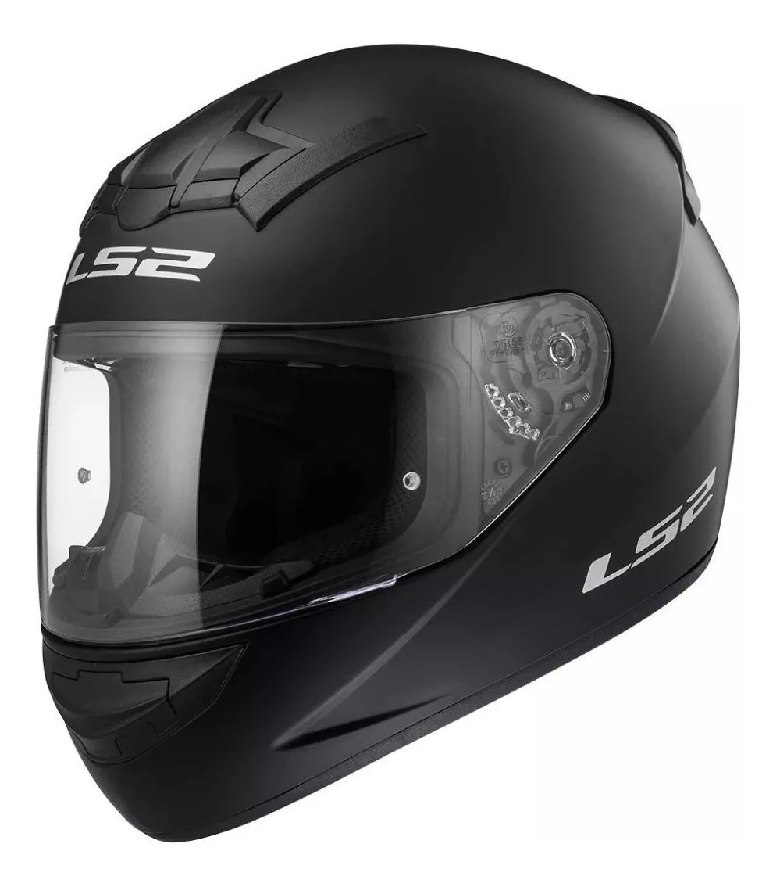
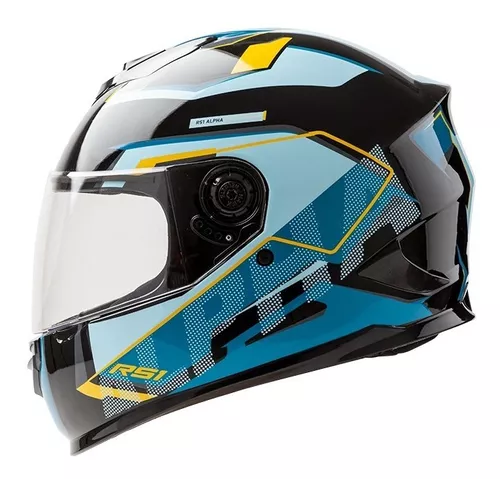
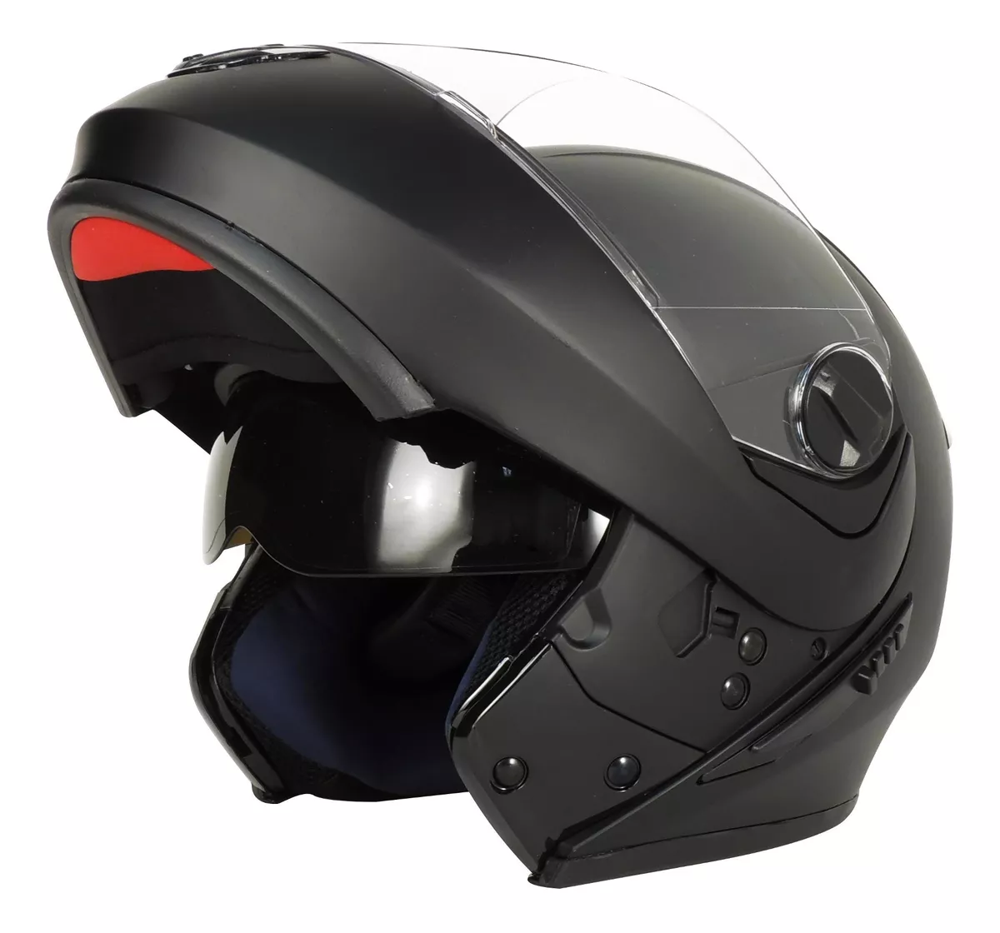

LS2 Rookie FF352 $132.250
El casco Rookie FF352 es perfecto para cualquier experiencia en dos ruedas gracias a su diseño liviano y seguridad. Además, posee interior desmontable y traba con hebilla milimétrica para mayor comodidad
Hawk Rs1f Alpha $47.410
EL nuevo casco integral Hawk está pensado y diseñado como un casco de gran calidad y seguridad, al alcance de todos. Los detalles como la tela reflectiva en la nuca, el interior en set de poliéster con mayor espesor y el material de confort que recubre el cierre de retención micrométrico lo destacan dentro de su gama.
Peels Doble Visor Urban $89.338
El casco Urban de Peels es un modelo rebatible, ideal para quien no renuncia a la seguridad de un casco integral, pero necesita la versatilidad de un casco jet. Esta pensado para uso en la ciudad y la ruta.